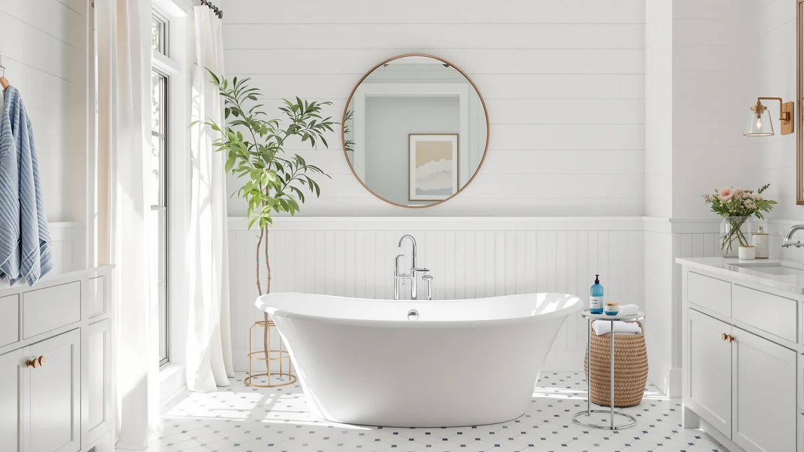

Things to Know Before You Buy
- Freestanding tubs trap moisture underneath because the base has open gaps for airflow and drainage, unlike a built-in tub sealed tight against the wall.
- Most access panels pop off with a putty knife or snap-fit clips, so you can check under the tub in under five minutes.
- A musty smell usually points to mold rather than a leak, though it's worth checking for a slow drip while the panel is open.
- A vinegar and water solution handles most mildew without damaging acrylic, stone resin, or cast iron finishes, so skip the bleach.
- Clean under the bathtub every three to four months in a humid bathroom, or twice a year if your space has good ventilation.
Knowing how to clean under bathtub edges and feet stops the musty smell and dark grime that build up where water pools and fresh air never reaches it. A freestanding tub makes this worse than a built-in model: instead of sealing against three walls, it rests on exposed feet or a skirt panel, leaving a gap underneath that catches dust, hair, soap scum, and splashed water every time someone bathes.
Five steps get the job done: clear the access point, vacuum loose debris, scrub the surface, dry it fully, and reseal any gaps so water stays out going forward. Expect to spend about 45 minutes and under $12, mostly on supplies you probably already keep under the sink. Tubs without a removable skirt panel still clean up fine with a flexible brush and a flashlight, so a different panel style on your tub won't change the outcome.
What You'll Need
- Supplies: white vinegar, baking soda, and a mold-safe bathroom cleaner, the basics for cleaning under the bathtub without harsh fumes.
- Tools: a flashlight and a shop vacuum with a narrow nozzle attachment, plus a putty knife if your access panel is screwed or clipped shut.
Step 1: Clear the access panel
Most freestanding tubs hide the plumbing and support structure behind a removable panel on the skirt. Look along the base for small screws, magnetic clips, or a seam where the panel pops free with gentle pressure. If the panel won't budge by hand, slide a putty knife into the seam and pry carefully, working your way around the edge instead of forcing one corner.
Set the panel aside somewhere flat so it doesn't warp, and shine a flashlight into the space before you touch anything. Look for standing water, a damp subfloor, or a slow drip at the drain connection. Finding a leak here means calling a plumber before you clean under the bathtub any further, since scrubbing over an active leak only masks the real problem.
Step 2: Vacuum loose debris
Dry debris turns to mud the moment it meets a wet cloth, so vacuum first. Work the nozzle along the base, around the feet or support legs, and into every corner you can reach. A narrow crevice attachment gets into tight gaps that a standard vacuum head skips over.
Pay close attention to the area directly under the drain and overflow fittings, where hair and soap residue collect fastest. If you spot visible mold growth, vacuum around it rather than through it to avoid scattering spores into the rest of the bathroom.
Step 3: Scrub with a vinegar solution
Mix equal parts white vinegar and water in a spray bottle, coat the affected surfaces, and let it sit for ten minutes before scrubbing. Vinegar breaks down mold and mineral deposits without the fumes or surface damage that bleach can cause on acrylic and stone resin tubs.
Use an old toothbrush or a narrow grout brush to work the solution into corners, along the base trim, and around the tub feet. For stains that don't lift with vinegar alone, a store-bought mold-safe bathroom cleaner handles the rest. Keep the bathroom door open or a fan running while you scrub, since the space under the tub has little natural airflow.
Step 4: Dry the space completely
Moisture left behind is what restarts mold growth within days, so drying matters as much as scrubbing. Wipe down the base, the feet, and the inside of the skirt panel with a dry microfiber cloth, then point a box fan or your bathroom exhaust fan at the opening for at least an hour.
Check corners and the area around the drain connection twice. Those spots dry slower than open surfaces, and a damp corner is exactly where mildew returns first if you seal the panel too soon.
Step 5: Reseal gaps and replace the panel
Run a finger along the caulk line where the tub base meets the floor or wall. Cracked, yellowed, or peeling caulk lets water seep under the bathtub every time someone showers, which undoes the cleaning you already did. Cut out any failing caulk with a utility knife and lay a fresh bead of mold-resistant silicone in its place.
Let new caulk cure for the time listed on the tube, usually 24 hours, before you run water near it. Once it's set, snap or screw the access panel back into place and do a final check with your flashlight to confirm you didn't leave any tools or cloths behind.
Common Mistakes to Avoid
The biggest mistake is sealing the panel back up while anything underneath is still damp. A closed, dark, humid space is exactly what mold needs to come back within a week, so give the area a full hour of airflow before you replace the panel.
Reaching for bleach is another common misstep. Bleach strips the finish on acrylic and stone resin tubs over repeated use, and it does nothing to address the moisture source that caused the mold. Stick with vinegar or a cleaner labeled safe for your tub's material.
Skipping the leak check is a costly shortcut. A musty smell under the tub sometimes comes from a slow drain leak rather than surface condensation, and scrubbing visible mold without finding the source means it returns within a month. Spend the extra two minutes checking the drain and supply connections with your flashlight before you close everything up.
Finally, don't ignore cracked caulk because it looks minor. A gap the width of a credit card lets enough water through to keep the space damp indefinitely. Recaulking takes fifteen minutes and costs under five dollars, far less than dealing with a recurring mold problem or a rotted subfloor down the line.
Our Top Picks
If you're shopping for a replacement, the base design matters as much as the finish, since a tub that's awkward to clean under will cost you time every few months. These three models span the acrylic and solid-surface price range, compared here on size, material, and current pricing.

Editor’s Pick
67 Inch Acrylic Freestanding Bathtub
A straightforward 67-inch acrylic soaker at a mid-range price, with a lightweight build that makes pulling the base panel for cleaning easier than it is on heavier stone resin models.
$599.99
Check Price on Amazon
Best Value
WOODBRIDGE 67" Acrylic Freestanding Bathtub
WOODBRIDGE prices this 67-inch acrylic tub within a dollar of the IDEALHOUSE option above, so the choice between the two comes down to styling preference rather than budget.
$599.00
Check Price on Amazon
Premium Choice
MEDUNJESS 61'' Free Standing Tub
The MEDUNJESS costs more than double the acrylic picks above. You lose five inches of length at 61 inches, but the sturdier build suits buyers who care more about durability than square footage.
$1,299.00
Check Price on AmazonFrequently Asked Questions
How often should I clean under my bathtub?
Clean under the bathtub every three to four months if your bathroom runs humid or has limited ventilation, and twice a year if your fan keeps the room dry after every shower. Freestanding tubs need more frequent attention than built-in models because the open base collects more airborne dust and moisture.
What's the fastest way to check for mold under a freestanding tub without removing the whole panel?
Shine a flashlight through the gap at the base without removing the full panel. A quick visual check reveals surface mold or standing water in under a minute, and you only need to pull the panel fully if you spot something or smell mustiness in the air.
Can I use bleach to clean under my bathtub?
Skip bleach on acrylic, stone resin, and most solid-surface tubs, since repeated exposure dulls the finish and weakens caulk over time. A vinegar and water solution removes mold and mildew as effectively without the fumes or long-term surface damage.
Why does the space under my freestanding tub smell musty even after I clean the bathroom floor?
The smell usually comes from trapped moisture under the tub itself, not the visible floor. Freestanding tubs have an open base that traps humid air with little circulation, so mold grows there even when the rest of the bathroom stays clean. Opening the access panel and running a fan for an hour clears most odors within a day.
Do I need a plumber to clean under a bathtub?
No, cleaning under the bathtub is a DIY job that takes about 45 minutes with basic supplies. Call a plumber only if you find standing water or a damp subfloor during the flashlight check in step one, since that points to a leak rather than ordinary condensation.
Verdict
Learning how to clean under bathtub spaces comes down to five habits repeated on a schedule: open the panel, vacuum before you scrub, use vinegar instead of bleach, dry the area fully, and check the caulk line every time you close it back up. None of these steps require special skills or expensive tools, and the whole process takes less than an hour every few months.
The payoff is a bathroom that doesn't develop the musty smell that comes from months of trapped moisture, and a subfloor that doesn't quietly rot under a tub nobody ever checks. If you're shopping for a new freestanding tub rather than maintaining your current one, a model like the IDEALHOUSE 67-inch acrylic tub featured above makes future access easier thanks to its lighter, removable skirt panel compared with heavier stone resin alternatives.
Whichever tub you own, put this cleaning routine on a calendar reminder. Mold does not wait for a convenient time to grow, and neither should you.